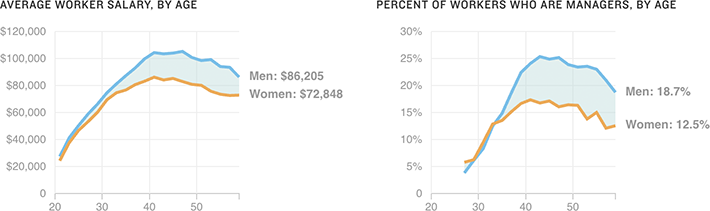

The Gender Gap Expands Around Same Age As The Manager Gap
Visier, a workforce analytics company, looked at salary and employment data for 165,000 U.S.-based employees, typically working for companies with over 5,000 employees in industries such as health care, technology, finance, insurance and manufacturing.
